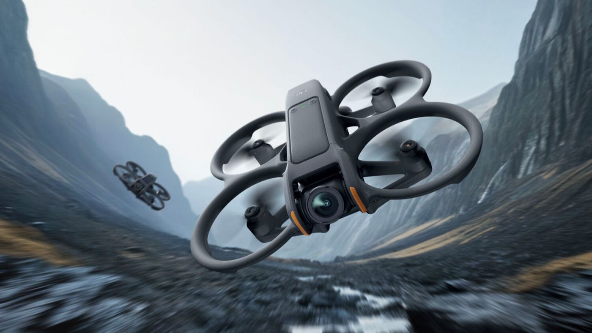

FPV Drone
Development
A custom 5" freestyle frame built for modularity — replaceable arms, a removable action-camera mount, and DJI O3 compatibility.

UAV // 5"What I wanted to build
Most 5" freestyle frames treat the arm and camera mount as fixed, single-purpose parts — crack one and the frame is done. The goal here was a frame architecture built around replaceable arms and a removable action-camera mount, so a hard crash means swapping one printed part instead of retiring the whole airframe.
The frame is designed around DJI O3 for video, with an emphasis on keeping the structure experimental and 3D-printable so new arm or mount geometries can be tested quickly between builds.
Modular frame, minimal fasteners
The structural approach centers on a 3D-printed frame with replaceable arms rather than a one-piece carbon plate — a design choice aimed at cutting repair time and cost after a crash, which is the dominant failure mode for freestyle flying.
Alongside the frame, build work has included flight controller firmware configuration and sensor calibration, with PID tuning passes aimed at improving stability and responsiveness ahead of test flights.
Progress, in order
Frame Assembly
Assembled the frame, tested motor fitment, and ran wiring layouts — with camera mount placement planned around cinematic shot angles.
Flight Controller Setup
Configured flight controller firmware and calibrated sensors, then tuned PID settings for stability and responsiveness ahead of the first flight.
First Test Flight
Completed the maiden flight. Handling was solid overall, with minor tuning still needed for agility and video smoothness.
Current configuration
What's held up, what hasn't
Designing the arms as separate, replaceable parts from the start made post-crash iteration much faster than a one-piece frame.
PID tuning has more impact on how "flyable" the drone feels than most of the structural decisions — worth dialing in early.
Continue refining agility and video smoothness, and test further reductions in fastener count on the arm-to-frame interface.